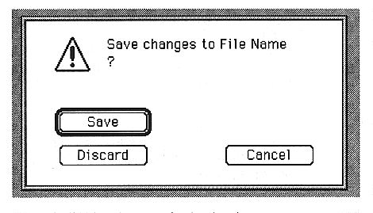

Closes the currently working file.
If you make changes and try to close without saving, a warning dialog box will appear.
The window below the active window is also closed automatically.
When the Slot window is closed, all parameter windows are closed.
When the Layer window is closed, close the Slot window.
When the Voice window is closed, a warning dialog box will appear after editing.

The buttons used on this screen are as follows:
Save
Save the changes and close the window.
Discard
Closes the window without reflecting the changes.
Cancel
Return to the edit window.